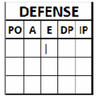

Before we launch into an explanation of what is meant by an error, it should be noted that, as with a safe hit, an error is always linked with the judgment of the official scorer. We shall deal with this issue at greater length when we discuss hits.
An error is a statistic charged against a fielder whose action has assisted the team on offense [OBR 9.12].
According to rule 9.12(a) of the OBR, The official scorer shall charge an error against any fielder whose misplay (fumble, muff or wild throw) prolongs the time at bat of a batter, prolongs the presence on the bases of a runner, or permits a runner to advance one or more bases, unless in the judgment of the official scorer, such fielder deliberately permits a foul fly to fall safe with a runner on third base before two are out in order that the runner on third shall not score after the catch.
Comment : Slow handling of the ball that does not involve mechanical misplay shall not be construed as an error. For example, the official scorer shall not charge a fielder with an error if such fielder fields a ground ball cleanly but does not throw to first base in time to retire the batter.
It is not necessary that the fielder touch the ball to be charged with an error. If a ground ball goes through a fielder's legs or a fly ball falls untouched and, in the scorer's judgment, the fielder could have handled the ball with ordinary effort, the official scorer shall charge such fielder with an error. For example, the official scorer shall charge an infielder with an error when a ground ball passes to either side of such infielder if, in the official scorer’s judgment, a fielder at that position making ordinary effort would have fielded such ground ball and retired a runner. The official scorer shall charge an outfielder with an error if such outfielder allows a fly ball to drop to the ground if, in the official scorer’s judgment, an outfielder at that position making ordinary effort would have caught such fly ball.
If a throw is low, wide or high, or strikes the ground, and a runner reaches base who otherwise would have been put out by such throw, the official scorer shall charge the player making the throw with an error.
The official scorer shall not score mental mistakes or misjudgments as errors unless a specific rule prescribes otherwise.
A fielder’s mental mistake that leads to a physical misplay - such as throwing the ball into the stands or rolling the ball to the pitcher’s mound, mistakenly believing there to be three outs, and thereby allowing a runner or runners to advance - shall not be considered a mental mistake for purposes of this rule and the official scorer shall charge a fielder committing such a mistake with an error.
The official scorer shall not charge an error if the pitcher fails to cover first base on a play, thereby allowing a batter-runner to reach first base safely. The official scorer shall not charge an error to a fielder who incorrectly throws to the wrong base on a play.
The official scorer shall charge an error to a fielder who causes another fielder to misplay a ball, for example, by knocking the ball out of the other fielder’s glove. On such a play, when the official scorer charges an error to the interfering fielder, the official scorer shall not charge an error to the fielder with whom the other fielder interfered.
To clarify what is stated in the rules, we could summarize by saying that an error is charged whenever a misplay by the defense benefits the opposing team.
|
 |
Errors are recorded with a vertical stroke in column “E” of the defense sheet, in the box
corresponding to the fielder who committed them. ATTENTION: All errors must be recorded (both “E” and “e”). |
Each kind of error covered by the rules can be classed as either:
A decisive error;
An extra-base error.